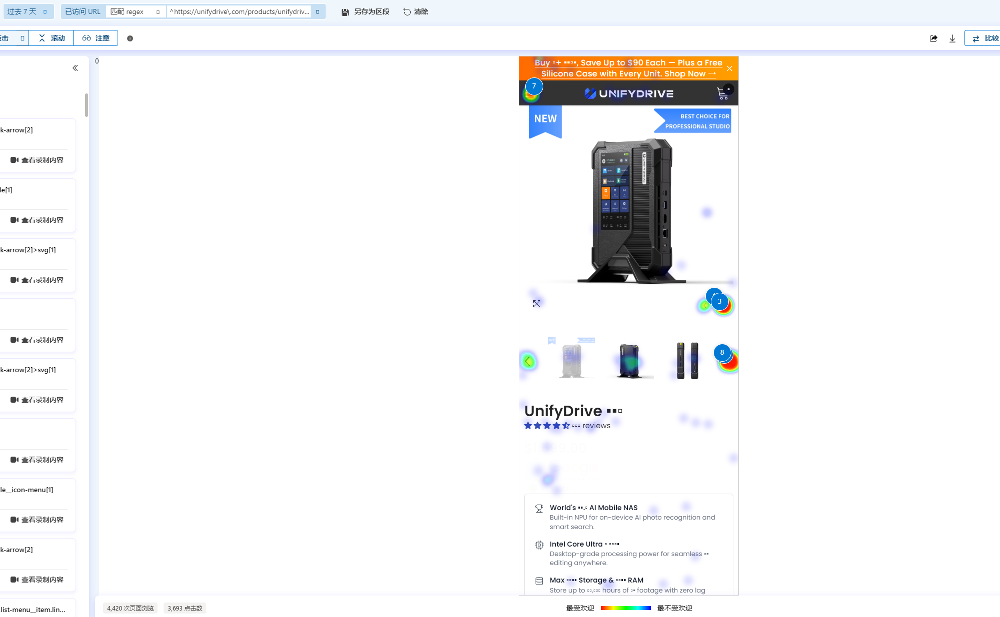
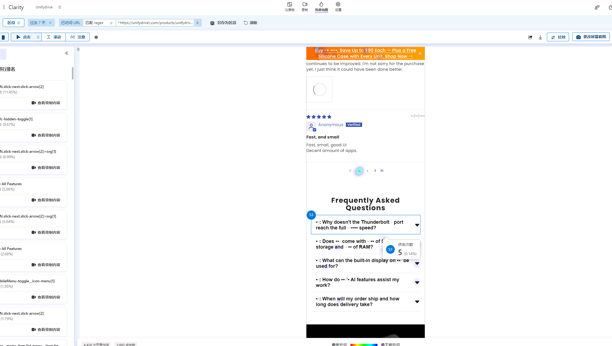

📊 八月周报 | August 7 – August 13, 2026
统计周期：2026-08-07 至 2026-08-13；对比周期：2026-07-31 至 2026-08-06。8 月 13 日为未完整自然日。
一、核心销售数据
| 指标 | 本期（8/7–8/13） | 上期（7/31–8/6） | 环比 |
|---|---|---|---|
| 总销售额 | $8,449.94 | $20,870.71 | ▼ -59.5% |
| 订单量 | 13 单 | 23 单 | ▼ -43.5% |
| 客单价 AOV | $650.00 | $907.42 | ▼ -28.3% |
| 访问量 | 9,783 | 16,408 | ▼ -40.4% |
| 在线商店转化率 | 0.123% | 0.134% | ▼ -8.5% |
- 销售额下降幅度大于订单量，主要由 UP6 订单减少和整体 AOV 下降共同造成。
- 访问量下降 40.4%，与订单量下降 43.5%基本一致，转化率仅小幅回落。
- 本期共有 12 位客户，其中 4 位回购客户，回购客户率为 33.3%。
二、产品明细
| 产品 | 本期订单 | 销售额 | AOV | 上期订单 | 订单变化 |
|---|---|---|---|---|---|
| UnifyDrive UP6 | 3 | $4,697.00 | $1,565.67 | 13 | -10 · -76.9% |
| UnifyDrive UT2 | 9 | $3,392.00 | $376.89 | 8 | +1 · +12.5% |
| UT2 | Silicone case | 7 | $0.00 | $0.00 | 7 | 0 |
| Remote control | 1 | $33.98 | $33.98 | 2 | -1 · -50.0% |
* 产品销售额采用 Shopify 净销售额口径；AOV = 产品销售额 ÷ 产品订单数。配件可能与主机处于同一订单，产品行项目数不等于总订单数。
产品层面的解释：本期不是所有产品都卖不动，而是高价值的 UP6 订单明显减少。少 10 个 UP6 订单，按本期 UP6 AOV 约 $1,565.67 估算，少掉的高客单价订单远大于 UT2 增加的 1 单，因此总销售额会明显下降。
三、地区与渠道表现
流量地区分布
| 排名 | 国家 / 地区 | 访问会话 | 占比 |
|---|---|---|---|
| 1 | 美国 | 8,409 | 87.1% |
| 2 | 日本 | 165 | 1.7% |
| 3 | 加拿大 | 133 | 1.4% |
| 4 | 澳大利亚 | 105 | 1.1% |
| 5 | 印度 | 93 | 1.0% |
| 6 | 新加坡 | 82 | 0.8% |
| 7 | 英国 | 68 | 0.7% |
订单归因渠道
| 渠道 | 订单 | 总销售额 | 订单占比 |
|---|---|---|---|
| 未识别来源 / Direct | 7 | $3,338.88 | 53.8% |
| Google Search | 2 | $2,203.91 | 15.4% |
| 1 | $1,660.15 | 7.7% | |
| Bing Search | 1 | $449.00 | 7.7% |
| ChatGPT | 1 | $399.00 | 7.7% |
| UnifyDrive 站内 / 自引荐 | 1 | $399.00 | 7.7% |
- Google Search 仅贡献 2 单，但销售额为 $2,203.91，对应较高客单结构。
- Instagram 带来 1 单 $1,660.15，是本期单笔价值最高的可识别社交来源。
- 未识别来源 / Direct 占 53.8%，UTM 与跨渠道归因仍有较大缺口。
四、Meta Ads 投放数据
统计期间：8/6–8/12；广告数据截至 8 月 12 日。
4.1 转化广告系列
| 广告系列 | 花费 | 转化价值 | ROAS | 购买 | CPA | CTR | CPC |
|---|---|---|---|---|---|---|---|
| Retargeting UP6 Sale | $237.50 | $2,109.15 | 8.88x | 2 | $118.75 | 4.19% | $3.30 |
| Retargeting UT2 Sale | $112.12 | $0 | — | 0 | — | 3.67% | $0.98 |
| UP6 VIP100 Purchase | $684.48 | $3,141.88 | 4.59x | 3 | $228.16 | 3.70% | $1.07 |
| Business Purchase | $37.18 | $0 | — | 0 | — | 1.25% | $3.38 |
| 转化广告合计 | $1,071.28 | $5,251.03 | 4.90x | 5 | $214.26 | — | — |
4.2 流量广告系列
| 广告系列 | 花费 | 落地页浏览 | 单次浏览 | 独立链接点击 | 链接 CTR | CPC | 频次 |
|---|---|---|---|---|---|---|---|
| UT2 Traffic | $334.74 | 2,827 | $0.12 | 2,967 | 5.73% | $0.11 | 1.06 |
| UP6 Traffic | $339.49 | 3,070 | $0.11 | 3,275 | 5.52% | $0.10 | 1.14 |
| 流量广告合计 | $674.23 | 5,897 | $0.11 | 6,242 | — | $0.11 | — |
- Retargeting UP6 Sale 是本期效率最高的 Meta 系列，ROAS 8.88x，带来 2 单。
- UP6 VIP100 Purchase 带来 3 单、$3,141.88 转化价值，但 ROAS 为 4.59x，仍低于 UP6 再营销。
- 流量广告不以购买衡量，主要看落地页浏览、单次浏览成本、CTR、CPC 和频次。
五、Google Ads 投放数据
统计期间：8/6–8/12；广告数据截至 8 月 12 日。
5.1 搜索广告系列
| 广告系列 | 花费 | 转化价值 | ROAS | 转化 | CPA |
|---|---|---|---|---|---|
| US UT2 Search | $297.10 | $2,048.00 | 6.89x | 2.00 | $148.55 |
| US UP6 Search | $256.35 | $0 | — | 0.00 | — |
| 搜索广告合计 | $553.45 | $2,048.00 | 3.70x | 2.00 | $276.72 |
5.2 点击质量
| 广告系列 | 展示 | 点击 | CTR | CPC | CVR |
|---|---|---|---|---|---|
| US UT2 Search | 1,121 | 96 | 8.56% | $3.09 | 2.08% |
| US UP6 Search | 803 | 95 | 11.83% | $2.70 | 0.00% |
| 搜索广告合计 | 1,924 | 191 | 9.93% | $2.90 | 1.05% |
- US UT2 Search 是本期 Google 唯一产生转化价值的系列，ROAS 6.89x，带来 2 次平台转化。
- US UP6 Search 获得 95 次点击、CTR 11.83%，但本期没有平台转化，需继续观察搜索词和落地页承接。
- Google 平台“转化次数”可以出现小数，且平台归因不等同于 Shopify 的实际整数订单。
六、业绩波动分析
本节将 Shopify 的成交结果，与 GA4、Google Search Console、Clarity 及本周广告数据交叉核对。结论不是单纯“广告没问题、网站没转化”，而是搜索需求和高意向流量减少，UP6 成交型流量转弱，移动端页面承接又放大了损失。
6.1 Shopify｜最终成交结果
来源：Shopify Analytics；统计周期 8/7–8/13，对比 7/31–8/6。
| 指标 | 本期 | 上期 | 变化 |
|---|---|---|---|
| GMV | $8,449.94 | $20,870.71 | -59.5% |
| 订单 | 13 | 23 | -43.5% |
| AOV | $650.00 | $907.42 | -28.3% |
| UP6 订单 | 3 | 13 | -76.9% |
| UT2 订单 | 9 | 8 | +12.5% |
GMV 的降幅大于订单降幅，直接原因是 UP6 少了 10 单，同时 UT2 的增长无法弥补高客单产品缺口。因此本周不是全站产品普遍卖不动，而是问题集中在 UP6。
6.2 GA4｜流量数量、质量与来源
来源：GA4「流量获取：带来会话的来源/媒介」；统计周期 8/7–8/13，对比 7/31–8/6。
| 指标 | 本期 | 上期 | 变化 |
|---|---|---|---|
| 会话 | 9,737 | 13,288 | -26.7% |
| 有效浏览会话 | 2,073 | 3,977 | -47.9% |
| 互动率 | 21.29% | 29.93% | 下降 8.64 个百分点 |
| 平均互动时长 | 17 秒 | 23 秒 | -26.1% |
| GA4 重要行为 | 10 | 18 | -44.4% |
| GA4 收入 | $6,174.98 | $19,493.05 | -68.3% |
| 来源 / 媒介 | 本期会话 | 上期会话 | 本期互动率 | 本期收入 |
|---|---|---|---|---|
| facebook / cpc | 4,711 | 6,365 | 18.17% | $0 |
| (not set) | 1,533 | 215 | 1.11% | $0 |
| fb / paid_social | 830 | 1,137 | 18.43% | $0 |
| (data not available) | 816 | — | 0.98% | $0 |
| google / organic | 744 | 1,501 | 44.89% | $432.98 |
| (direct) / (none) | 649 | 1,431 | 24.81% | $1,998.00 |
| youtube.com / referral | 351 | 704 | 50.43% | $399.00 |
| ig / paid_social | 296 | 488 | 23.31% | $1,599.00 |
| google / cpc | 198 | 503 | 52.02% | $848.00 |
| meta / paid_social | 84 | — | 30.95% | $0 |
说明：“有效浏览会话”对应 GA4 的感兴趣会话，即停留超过 10 秒、发生至少 1 个重要行为，或浏览至少 2 个页面的会话。“GA4 重要行为”对应关键事件，可能包含购买、加购、开始结账或表单等；截图未展示具体事件清单，因此不能全部视为购买。
- 总会话下降 26.7%，但有效浏览会话下降 47.9%，说明损失的不只是访问数量，流量质量也在下降。
- Google Organic、Google CPC 和 Direct 分别下降 50.4%、60.6% 和 54.6%；这些主动搜索和品牌访问通常比普通社交流量更接近成交。
- facebook / cpc 仍占最大流量，但平均互动仅 4 秒、GA4 未记录收入；它完成了引流，却没有提供同等强度的成交信号。
- 本期 (not set) 1,533 次、(data not available) 816 次，两者合计约占 24.1%，说明 UTM 与归因质量也需要整理。GA4 收入低于 Shopify GMV，因此仅用于趋势和渠道判断，不与 Shopify 对账。
6.3 GSC｜自然搜索需求变化
来源：Google Search Console「搜索结果表现」；统计周期 8/7–8/13，对比 7/31–8/6。
| 指标 | 本期 | 上期 | 变化 |
|---|---|---|---|
| 自然点击 | 645 | 1,322 | -51.2% |
| 自然展示 | 1.73 万 | 2.05 万 | -15.6% |
| CTR | 3.7% | 6.5% | 下降 2.8 个百分点 |
| 平均排名 | 11.5 | 12.1 | 改善 0.6 |
品牌词点击
| 搜索词 | 本期点击 | 上期点击 | 变化 |
|---|---|---|---|
| unify drive | 103 | 263 | -60.8% |
| unifydrive | 92 | 272 | -66.2% |
主要页面展示
| GSC 页面 | 本期展示 | 上期展示 | 变化 |
|---|---|---|---|
| /products/unifydrive-ut2 | 564 | 678 | -16.8% |
| /blogs/features/what-is-raid-10-raid-levels-explained | 425 | 247 | +72.1% |
| /products/unifydrive-up6 | 363 | 614 | -40.9% |
| /blogs/features/raid-0-1-5-6-10-explained-choosing-the-right-raid-level-for-your-unifydrive-nas | 258 | 139 | +85.6% |
| https://unifydrive.com/ | 205 | 398 | -48.5% |
| /blogs/features/how-to-stop-paying-for-cloud-storage-and-take-back-control-of-your-files | 160 | 95 | +68.4% |
| /blogs/features/ssd-vs-hdd-for-nas-unifydrive-ut2 | 157 | 150 | +4.7% |
| /blogs/features/top-private-cloud-storage-solutions-for-personal-and-business-needs-in-2025 | 135 | 45 | +200.0% |
| /blogs/features/unifydrive-ut2-user-guide-solving-common-and-unexpected-issues-easily | 120 | 140 | -14.3% |
| /ja-jp/blogs/特徵/why-nas-is-the-smarter-backup-solution-for-secure-storage-of-photos-work-files-and-more | 85 | 2 | +4,150% |
- 平均排名从 12.1 改善到 11.5，但自然点击仍下降 51.2%，所以不能简单归因于排名下滑。
- 品牌词点击、首页和 UP6 产品页展示明显下降，说明品牌及 UP6 的购买型搜索需求和点击意愿转弱。
- 多篇 RAID、云存储和私有云文章的展示反而增长，说明 SEO 不是全面下降，而是流量结构更偏向“了解知识”的信息型内容。这些用户离购买更远，短期内无法替代品牌词和产品页流量。
- UT2 产品页展示仅下降 16.8%，明显好于 UP6 的 40.9%；这与 Shopify 中 UT2 订单增长、UP6 订单下降的产品分化方向一致。
6.4 Clarity｜移动端页面行为
来源：Microsoft Clarity「热度地图」；过去 7 天，按 UnifyDrive 产品 URL 筛选的移动端视图。
- 热图样本包含 4,420 次页面浏览、3,693 次点击；点击热点主要落在主图、缩略图、轮播箭头和功能内容，说明用户首先在确认产品外观和功能。
- 移动首屏主要被促销条、导航、主图和缩略图占用；用户需要继续下滑后才能看到分期、保障信息和“为什么值 $1,599”的解释，购买理由出现得偏晚。
- 热图左侧排行显示轮播箭头约占 11.45% 的点击，用户愿意切换图片了解产品；但 FAQ 第一项只有 5 次点击，占 0.14%，关键异议没有被高频查看。
- FAQ 中出现 Thunderbolt 速度、是否包含存储/RAM、内置屏幕用途、AI 功能及交付时间等问题，说明用户购买前主要关心配置、兼容性和交付承诺。这些信息应提前到购买区域附近，而不是只放在页面深处。
- 这些数据能证明购买信息的优先级和路径仍可优化，但热图本身不能证明支付故障。结合 Shopify 转化率仅小幅回落，当前更应先处理加购前的说服，而不是直接判断结账坏了。


6.5 广告数据｜引流有效，UP6 成交分化
来源：本周报第四、第五部分 Meta Ads 与 Google Ads；统计期间 8/6–8/12。
- Meta 流量广告带来 5,897 次落地页浏览，单次成本 $0.11，CTR、CPC 也处于正常水平，说明“低成本带来访问”的目标已完成。
- Meta 转化广告合计 ROAS 4.90x，其中 UP6 再营销 8.88x、VIP100 4.59x；广告不是整体失效，但效果主要由少数转化系列支撑。
- Google UT2 Search 的 ROAS 为 6.89x；UP6 Search 有 95 次点击、CTR 11.83%，却没有转化，说明 UP6 已从“有没有点击”转为“点击后为什么没有成交”的问题。
6.6 后续动作
- 广告：保留 UP6 再营销、VIP100 和 Google UT2 Search；对无转化的 UP6 Search 检查搜索词、关键词匹配及广告承诺，暂不盲目扩量。
- 页面：优化 UP6 移动端首屏，提前展示价格理由、配置差异、评价、交付时间、运费和购买按钮，并增加吸附购买栏。
- SEO：检查品牌词与 UP6 页面标题、搜索摘要和近期活动信息；保留增长中的 RAID 内容，同时加强内容页到 UP6/UT2 产品页的内部引导。
- 数据：统一 facebook / fb / meta / ig 的 UTM 命名，减少 (not set) 与 (data not available)；下周固定复查 GSC 品牌词、GA4 有效浏览会话及 Shopify UP6 加购和订单。
注：各平台归因模型和数据口径不同。Shopify 用于确认实际成交，GA4 用于判断流量质量与来源，GSC 用于判断自然搜索需求，Clarity 用于观察页面行为；不将不同平台的收入直接相加。